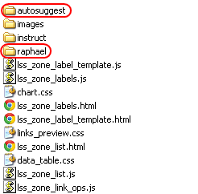

|
'LSS Zone' Help System
|
|
Browse more information on-line>>
|
|

Third Party Components
raphael.js
Raphaël is a small JavaScript library that should simplify your work with vector graphics on the web. If you want to create your own specific chart or image crop and rotate widget, for example, you can achieve it simply and easily with this library. Raphaël ['ræfeɪəl] uses the SVG W3C Recommendation and VML as a base for creating graphics. This means every graphical object you create is also a DOM object, so you can attach JavaScript event handlers or modify them later. Raphaël’s goal is to provide an adapter that will make drawing vector art compatible cross-browser and easy.
Auto-suggest Control
Useful and easy to use auto-complete widget by Dmitry Khudorozhkov.